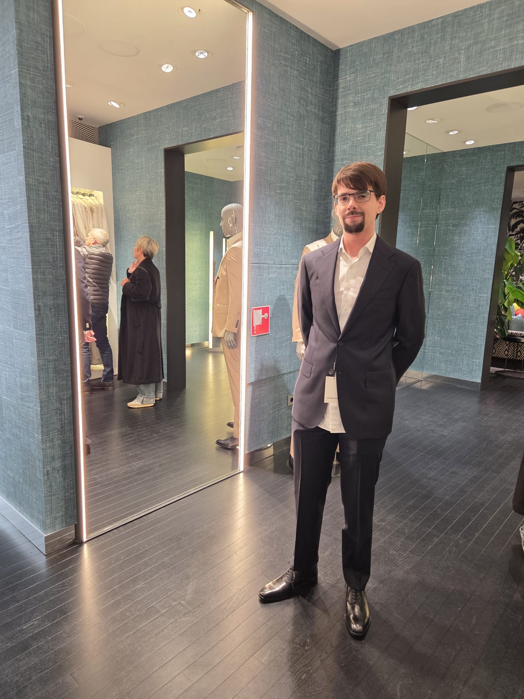

Mijn naam is Daan de Maat en ik ben 22 jaar oud. Ik volg de opleiding tot software developer aan de Haagse Hogeschool en zit momenteel in leerjaar 2 semester 3.
Ik woon in Den Haag en ben een enthousiaste software developer. Ik heb ervaring met werken met talen zoals python, javascript en java. Verder heb ik leren omgaan met programma's zoals Visual Paradigm, SQL, PowerBI en Trello.
In mijn vrije tijd speel ik graag videogame of ben ik te vinden in mijn lokale sportschool. Ik vind het leuk om zowel samen met anderen te werken als even op mezelf te zijn en kan me makkelijk aanpassen aan veranderende situaties.